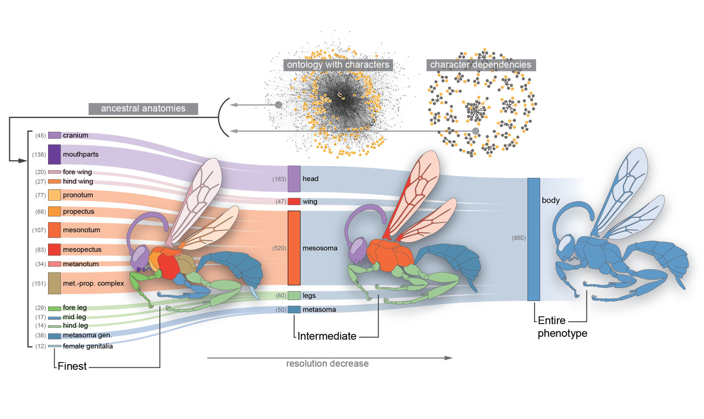
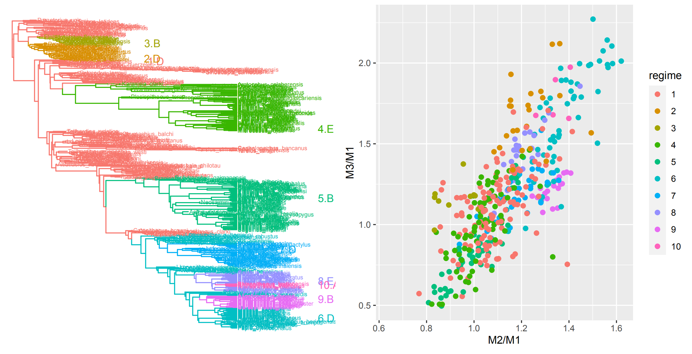
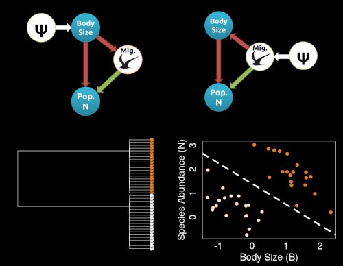
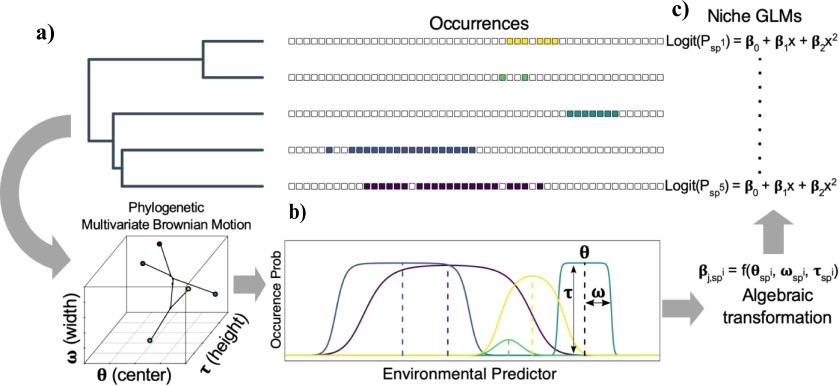

Knowledge-Guided Comparative Methods

Most phenotypic traits are complex characters, even when represented with discrete character states. Modeling such characters with simplistic models may yield unrealistic inferences.
Yet more complex models can quickly become statistically intractable. We address this problem by incorporating structured biological knowledge in the form of phenotypic ontologies--
Knowledge graphs of trait definitions and interrelationships--into phylogenetic comparative methods.
More information at the SCATE project (Semantic Comparative Analysis of Trait Evoluiton) can be found here.
We have recently expanded this work into the Imageomics Institute, a multi-institution NSF funded institute aimed at developing knowledge-guided machine learning (KGML)
to develop new methods for studying and aquiring phenotypic traits directly from images. Imageomics leverages structured knowledge about traits and genetic ancestry (in the form of pedigrees and phylogenies)
to improve KGML tasks of species classification, trait segmentation, and beyond.
Connecting Macroevolutionary Landscapes to Additional Sources of Biological Data

G.G. Simpson's phenotypic adaptive landscape provides a conceptual framework for understanding the dynamics of trait evolution on both micro and macroevolutionary scales.
This framework has been formalized at microevolutionary scales in the empirically-validated framework of evolutionary quantitative genetics. Futhermore, hypotheses regarding
the macroevolutionary adaptive landscape have been applied to patterns of trait diversification at macroevolutionary scales. We work to better understand when, why and how
adaptive landscapes change at macroevolutionary scales, and why these shifts occur. Current work involves incorporating biomechanical performance landscapes and biomechanical constraints
into these models to link these models to other sources of data.

In another project, we are working to bridge between Quantitative Genetic models of microevolution and macroevolutionary patterns using primate dental evolution, which provides
a unique opportunity to link across scales due to the abundant data on primate molars available from comparative, fossil, and microevolutionary datasets.
Rethinking Phylogenetic Comparative Methods

Much of our work involves establishing theoretical and conceptual frameworks for understanding how evolutionary processes connect to PCMs.
A major gap in our PCM toolkit is understanding how causal processes can impact phylogenetic datasets. In my NSF CAREER Award, we are seeking to
integrate causal inference with PCMs. Much of the work in my lab focuses on demonstrating how the logic of causal inference can change our inferences about macroevolution.
<>
Adaptive Radiation, Trait Evolution, and Macroevolution

In collaboration with Dr. Anahi Espindola, we are developing new models for phylogenetic niche evolution that will be applied to reconstruct the evolution history of
diversification and evolution in a plant-pollinator system. See my former Masters student, Sean McHugh's preprint here.
This project seeks to untangle the multifactorial drivers of diversification, with a particular eye
to understanding how we can best test and disentangle factors using PCMs.
Other projects in the lab involve studying the evolution of Thermal Physiology across the tree of life with Dr. Martha Munoz at Yale University, and studying the evolution of Life History with
Dr. Holly Kindsvater at Virginia Tech.
<>